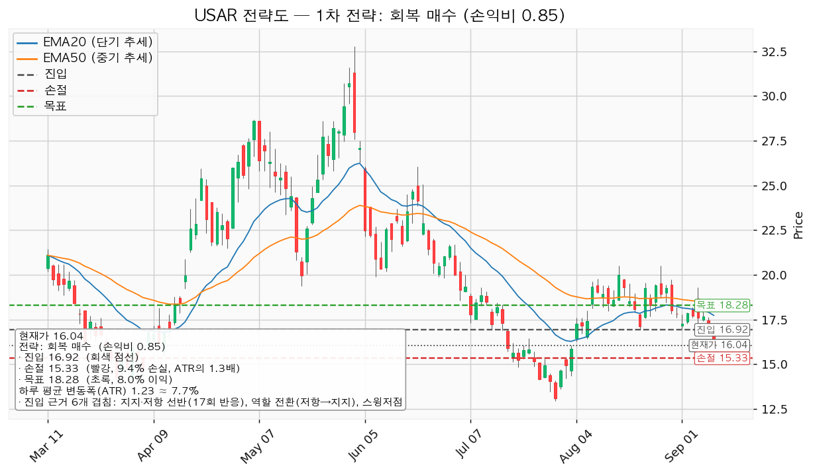
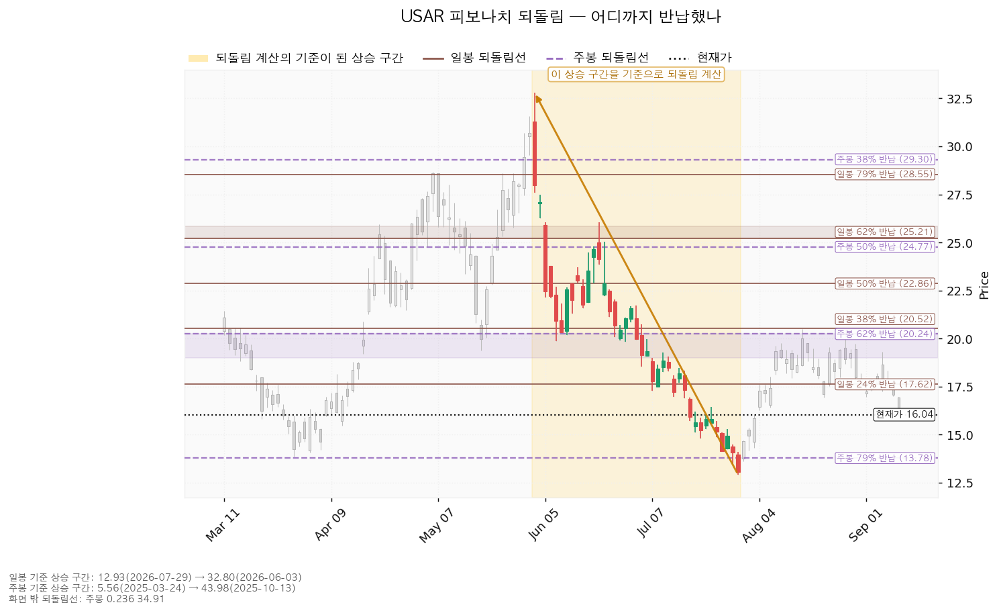
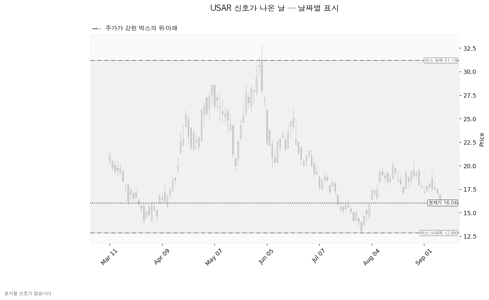
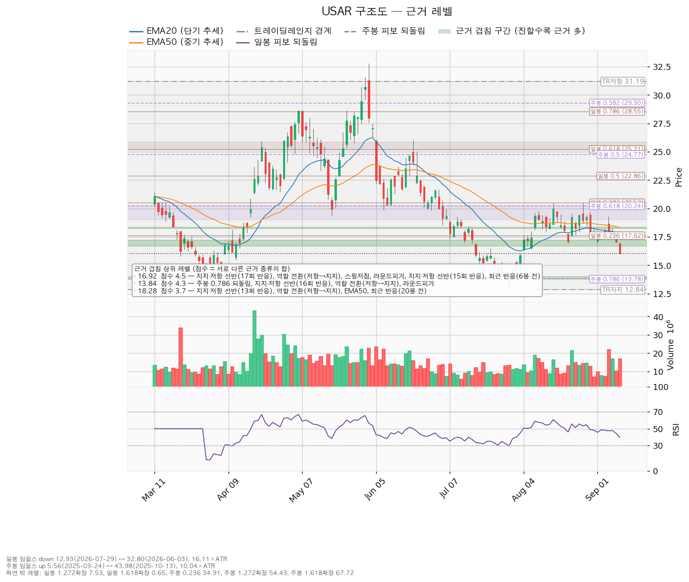

USA Rare Earth(USAR)는 미국 내에서 희토류 자석과 그 원료를 만드는 회사로, 텍사스 라운드톱 광산 개발과 오클라호마 자석 공장을 함께 추진하고 있습니다.
기준 종가는 2026-09-10의 16.04달러입니다.
| 구분 | 가격 | 판정 방식 | 현재 상태 | 현재가 대비 |
|---|---|---|---|---|
| 회복선 (진입 조건) | 16.92달러 | 일봉 종가 회복 + 되돌림 지지까지 확인되면 진입 | 회복 대기 | +5.49% |
| 집행 손절 | 15.33달러 | 종가·장중 구분 없이 닿으면 청산 — 진입한 경우에만 유효하며 미진입 상태에서는 의미가 없습니다 | 미진입 | -4.43% |
| 관망 종료 기준 | 15.02달러 또는 2026-11-06 실적 | 일봉 종가가 아래로 마감하면 이 회복 시나리오를 접습니다 | 유지 중 | -6.36% |
| 확인선 (상승 확정) | 18.28달러 | 일봉 종가 돌파 후 되돌림 지지 | 미돌파 | +13.97% |
| 폐기선 (구조) | 12.84달러 | 이탈 후 3거래일 내 종가 회복 실패 + 반등에서 저항 확인 — 하루 변동폭의 2.59배 거리 | 유지 중 | -19.95% |
집행 손절(15.33)이 관망 종료 기준(15.02)보다 위에 있는 것은 역할이 다르기 때문입니다. 손절은 진입한 포지션을 빼는 가격이고, 관망 종료 기준은 아직 사지 않은 사람이 이 회복 시나리오를 접는 가격입니다. 그 사이의 15.47~15.80 선반은 근거가 얇아(겹침 2.2점) 관망 종료 기준으로 쓰지 않고, 그 아래 15.02달러 구간(겹침 3.3점 — 라운드피겨 15, 15회 반응 선반, 저항에서 지지로의 역할 전환)을 씁니다.
폐기선 12.84달러는 하루 변동폭의 2.59배 거리로 3배 안쪽이라 구조 판정선으로는 작동합니다. 다만 -19.95%를 견디며 기다리라는 지침은 아니므로, 미진입자가 실제로 볼 선은 세 번째 줄입니다.
직전 리포트는 판정이 패스였고, 그 위에 조건을 둘 걸었습니다 — 진입은 "18.37달러 종가 회복 + 되돌림 지지", 관망 종료는 "17.14달러 종가 이탈 또는 11월 6일 실적".
| 날짜 | 고가 | 저가 | 종가 | 판정 |
|---|---|---|---|---|
| 09-01 | 17.80 | 16.96 | 17.26 | 회복선 미달 |
| 09-02 | 17.90 | 17.28 | 17.85 | 회복선 미달 (이후 최고 종가) |
| 09-03 | 18.18 | 17.60 | 17.69 | 회복선 미달 |
| 09-04 | 19.30 | 17.25 | 17.61 | 장중에 18.37 위로 갔으나 종가는 아래 |
| 09-08 | 18.32 | 17.41 | 17.66 | 회복선 미달 |
| 09-09 | 17.63 | 17.01 | 17.06 | 관망 종료 기준 17.14 종가 이탈 — 충족 |
| 09-10 | 16.97 | 16.00 | 16.04 | 하락 지속 |
진입 조건 18.37달러는 종가로 한 번도 충족되지 않았습니다. 9월 4일 장중 고가가 19.30달러까지 올랐지만 그날 종가는 17.61달러로 되밀렸고, 이후 최고 종가는 17.85달러입니다. 진입이 성립하지 않았으므로 직전 리포트의 목표 20.21달러와 손절 16.58달러는 판정 대상이 아닙니다. 9월 9일 종가 17.06달러가 관망 종료 기준을 아래로 통과하면서 직전 리포트의 진입 계획은 종료됐습니다.
패스 판정 자체는 결과로도 맞았습니다. 8월 31일 기준가 18.00달러에서 지금 16.04달러로 -10.89%이고, 직전 리포트가 적었던 손절 16.58달러도 9월 10일 저가 16.00달러가 통과했습니다.
| 항목 | 08-31 | 09-11 | 왜 움직였나 |
|---|---|---|---|
| 회복선·진입 | 18.37 | 16.92 | 가격이 -10.89% 내리면서 진입 후보가 아래 구간으로 내려왔습니다. 16.71~17.20 구간은 겹침 4.5점으로 직전 회복선(3.7점)보다 근거가 두껍습니다 |
| 집행 손절 | 16.58 | 15.33 | 진입이 내려온 만큼 그 아래 근거 구간(15.47~15.80)도 함께 내려왔습니다 |
| 목표 | 20.21 | 18.28 | 진입 위쪽의 첫 겹침 구간이 20.21에서 18.28로 바뀌었습니다 |
| 손익비 | 1.03 | 0.85 | 손절 폭 1.59달러에 이익 폭 1.36달러 — 직전보다 나빠졌습니다 |
| 확인선 | 20.21 | 18.28 | 직전 회복선이었던 자리가 이번에는 확인선이 됐습니다 |
| 관망 종료 | 17.14 | 15.02 | 17.14는 9월 9일 종가 이탈로 소진됐습니다 |
| 폐기선 | 12.63 | 12.84 | 180봉 창이 이동하며 박스 하단이 재계산됐습니다 |
| 하루 평균 변동폭 | 1.4724 | 1.2331 | 변동성이 줄었습니다 |
| 현재가 추격 | 비권장 | 해당 없음 | 진입선이 현재가보다 +5.49% 위에 있어 따라 살 자리가 아닙니다 |
직전에 회복선이었던 18.37달러 구간과 이번 확인선 18.28달러 구간은 같은 가격대(선반 17.95~18.56, 13회 반응)입니다. 그 자리를 종가로 되찾지 못한 채 가격이 아래로 내려왔기 때문에, 같은 가격의 이름이 "진입선"에서 "상승 확인선"으로 바뀌었습니다.
직전 리포트는 영업활동 현금흐름을 -1억 606만 달러, 잉여현금흐름을 -2억 8,396만 달러로 인용했습니다. 이번 조회에서는 같은 결산 기준일(2025-12-31)에 대해 영업활동 현금흐름 -4,899만 달러, 잉여현금흐름 -8,634만 달러가 나옵니다. 이번 수치는 영업 -4,899만에서 설비투자 3,736만을 뺀 값이 -8,634만으로 서로 맞아떨어지지만, 직전에 인용한 세 수치는 서로 맞지 않았습니다. 이번 값을 기준으로 쓰고, 직전 인용치는 정정합니다.
컨센서스도 함께 바뀌었습니다 — 애널리스트 8명에서 9명, 최저 목표주가 30.00달러에서 21.00달러, 다음 해 예상 주당순이익 -0.043달러에서 +0.03달러입니다.
직전도 이번도 패스입니다. 다만 이유의 크기가 달라졌습니다 — 손익비가 1.03에서 0.85로 내려와 1 미만 구간에 들어왔습니다. 박스 안쪽 판정은 직전의 분산 우위에서 중립으로 바뀌었는데, 이는 개선이 아니라 지지 테스트 거래량 흐름이 증가에서 혼조로 읽히면서 근거 하나가 빠진 결과입니다. 저점 절하는 그대로입니다.
| 항목 | 값 | 의미 |
|---|---|---|
| 현재가(2026-09-10 종가) | 16.04달러 | 전일 17.06달러 대비 -5.98% |
| EMA20 (단기 흐름선) | 17.73달러 | 현재가가 -9.53% 아래 |
| EMA50 (중기 흐름선) | 18.33달러 | 현재가가 -12.49% 아래 — 역배열 |
| RSI(14) — 과열·침체 정도를 재는 지표, 50이 중립 | 39.64 | 중립 아래, 침체 기준선 30까지는 여유 |
| ATR (하루 평균 변동폭) | 1.2331달러 | 주가의 7.69% |
| 횡보 박스 | 12.84 ~ 31.19달러 (유효) | 폭이 하루 변동폭의 14.88배 |
| 국면 | 횡보 레인지 — 하단 사수 조건부 | 추세 방향은 하락, 국면 후보는 하락 진행 |
박스 판정 근거: 조회된 일봉은 753봉이며 40·90·180봉 세 구간을 시험했습니다. 가격이 경계 안에 머문 비율은 40봉 0.800(유효 아님), 90봉 0.933, 180봉 0.983으로 180봉이 채택됐습니다. 박스 경계를 그 구간의 최고·최저로 그리기 때문에 구간을 넓히면 이 비율은 기계적으로 올라갑니다. 실제로 폭이 하루 변동폭의 14.88배로 넓어, 폐기선 12.84달러는 구조 판정선이지 일상적인 관리선이 아닙니다.
박스 안쪽에서 무슨 일이 있었나 — 중립: 지지 테스트는 4회였습니다(2025-12-31 저가 11.73, 거래량 평균의 1.13배 → 2026-03-30 13.87, 0.97배 → 2026-04-13 15.47, 0.78배 → 2026-07-29 12.93, 1.29배). 테스트 때 매도 거래량은 늘었다 줄었다 하는 혼조이고, 상승봉 대 하락봉 거래량비는 0.97로 매수 우위가 없습니다. 박스 안 저점은 절하됐고, 이것이 중립 판정의 유일한 근거입니다. 매집 우위가 아니므로 지지 확인 매수 조건은 채워지지 않았고, 그래서 그 셋업은 산출되지 않았습니다.
직전 구간과의 관계: 이 박스 직전 180봉의 구간은 8.42~27.58달러로 지금 박스와 가격대가 겹칩니다. 위로 뚫고 올라온 것도, 아래로 이탈한 것도 아닌 같은 횡보의 연장입니다.
| 시나리오 | 조건 | 구조 해석 | 행동 |
|---|---|---|---|
| 상승 전환 | 16.92 종가 회복·지지 → 18.28 종가 돌파 | 속임수 하락 확인 → 강세 신호 → 되돌림 지지 → 상승 국면 | 손익비 0.85이므로 16.92 회복만으로는 들어가지 않습니다. 18.28을 종가로 넘으면 그때 새 셋업으로 다시 산출합니다 |
| 횡보 지속 | 12.84를 지키며 18.28 아래 박스 유지 | 구조는 유지되는 국면입니다. 매물 소화에 시간이 필요할 뿐 부정적 신호가 아닙니다 | 신규 진입 보류. 추적 항목 — ① 지지 테스트 매도 거래량 감소(현재: 혼조) ② 저점 절상(현재: 절하) ③ 상승 시 거래량·캔들 폭 확대(현재: 거래량비 0.97) |
| 시나리오 폐기 | 12.84 이탈 후 3거래일 내 회복 실패, 또는 그 전에 11.61 아래 종가 마감 + 반등에서 저항 확인 | 매집이 아니라 재분산 — 추가 저점 갱신 가능성을 엽니다 | 새 매도 절정과 새 박스가 만들어질 때까지 관망 |
세 갈래 중 지금 가장 두꺼운 것은 횡보 지속입니다. 다만 박스 안 저점이 절하 중이고 상승봉 거래량 우위도 없어, 횡보가 위로 풀릴 근거는 아직 관측되지 않았습니다.
엔진이 산출한 셋업은 1개입니다. 하락·중립 국면이라 눌림 매수나 돌파 매수는 나오지 않았고, 박스 안쪽이 매집 우위가 아니라 지지 확인 매수도 나오지 않았습니다.
| 항목 | 회복 매수 — 대표 셋업 |
|---|---|
| 엣지의 종류 | 모멘텀 (회복 확인형) |
| 전제 | 저항을 종가로 되찾으면 그 방향이 이어진다 |
| 구조 증명도 | 회복 확인형 (가중치 1.0) — 저항을 종가로 회복한 뒤에만 들어가므로 진입가는 불리하지만 구조가 먼저 증명됩니다 |
| 이 유형의 성격 | 자주 틀리고 소수가 크게 맞는 구조. 승률을 기대하는 셋업이 아닙니다 *(이 유형의 일반적 성격이며, 이 엔진에서 측정한 값이 아닙니다 — 백테스트 자료가 없습니다)* |
| 진입 | 16.92달러 (+5.49%, 하루 변동폭의 0.71배 거리) |
| 진입 근거 겹침 | 4.5점 / 6개 — 지지·저항 선반(17회 반응), 역할 전환(저항→지지), 스윙저점, 라운드피겨 17, 지지·저항 선반(15회 반응), 최근 반응(6봉 전). 구간 16.71~17.20 |
| 집행 손절 | 15.33달러 — 근거 겹침 구간(15.47~15.80, 2.2점) 바로 아래. 손절 폭 -9.42%, 하루 변동폭의 1.29배 |
| 목표 | 18.28달러 (+8.04%) — 겹침 3.7점 / 4개(선반 13회 반응, 역할 전환, EMA50, 최근 반응 20봉 전). 구간 18.26~18.33 |
| 손익비 | 1 : 0.85 (손절 폭 1.29 ATR 기준) — 손실 폭 1.59달러, 이익 폭 1.36달러 |
| 비중 | 1회 손실 한도 계좌의 1% ÷ 손절 폭 9.42% = 계좌의 10.6%. 한 종목 상한 13% 이내입니다 |
| 판정 | 패스 — 손익비가 1 미만입니다. 엔진도 이 셋업을 비매력·보류로 분류했습니다 |
| 분할 청산(엔진 산출) | T1 17.78에서 50%(손익비 0.54) → 잔여 손절 16.92(본전) → T2 18.28(0.85). 전 구간 0.70, T1 후 하한 0.27 |
| 청산 규칙 | 목표에서 전량 청산. 트레일링은 걸지 않습니다 |
손익비는 손절을 조여서 만든 숫자가 아닙니다. 손절 15.33달러는 아래쪽 근거 구간 바깥에 놓인 구조적 손절이고 폭도 하루 변동폭의 1.29배로 넓어, 0.85가 구조 손절 기준의 값 그대로입니다. 진입 16.92달러에서 목표 18.28달러까지의 거리는 1.36달러, 하루 변동폭의 1.10배입니다. 이익 구간이 이틀치 등락도 되지 않는데 손실 구간은 그보다 넓습니다.
분할 청산 계획도 상황을 바꾸지 못합니다. 전 구간 손익비 0.70, T1 체결 후 본전 스탑으로 옮겼을 때의 하한이 0.27로 모두 1 미만입니다. 진입에서 목표까지가 하루 변동폭의 2배 미만이므로 트레일링이나 다단 청산은 권하지 않습니다(2배라는 기준은 관행이며 정설은 아닙니다).
대표 셋업 선정 이유: 손익비 0.85 × 구조 증명도(회복 확인형) × 근거 겹침 4.5점으로 선정됐습니다. 산출된 셋업이 하나뿐이라 손익비 순위와 대표 셋업이 일치하며, 그 손익비가 패스 판정의 근거입니다.
집행 규칙: 진입 근거는 모멘텀(저항을 되찾으면 이어진다)이지만 집행은 레인지 규칙을 따릅니다 — 손절은 구조 아래, 목표 18.28달러에서 전량 청산이고 트레일링은 걸지 않습니다. 18.28달러 위 구간은 이 포지션을 끌고 가서 먹는 것이 아니라 새 셋업으로 다시 잡습니다.

18.28달러는 이 셋업의 목표이면서 상승 확인선입니다. 그 가격에 닿는 것만으로는 아무 조치도 하지 않고, 그 자리에서 나오는 반응을 보고 결정합니다.
박스 상단 31.19달러는 근거가 박스 경계 하나뿐(겹침 1.2점)이라 확인선으로 쓰지 않고 그 위의 맥락으로만 둡니다.
가격을 한 번 내준 것은 폐기가 아닙니다. 셋업 무효화의 기준선은 진입선인 16.92달러입니다.
① 관찰: 일봉 종가가 16.92달러 아래로 마감 → 구조 이탈이 시작된 것이지만 되돌아 올라오면 속임수 하락일 수 있어 아직 무효가 아닙니다. 신규 진입만 중단하고 집행 손절은 그대로 둡니다. ② 경고: 이탈 후 3거래일 안에 16.92달러를 종가로 회복하지 못함, 또는 그 전에 일봉 종가가 15.69달러 아래로 마감(하루 평균 변동폭의 1배만큼 더 밀림) — 둘 중 먼저 오는 쪽. 잔여 비중을 줄이고 반등에서의 반응을 확인합니다. ③ 무효: 반등이 16.92달러에서 막히고 그 아래로 되밀림(지지가 저항으로 전환) → 셋업 폐기.
집행 손절 15.33달러는 위 판정이 몇 단계에 있든 무관하게 별도로 작동하며, 장중 일시 이탈은 어느 단계에도 해당하지 않습니다. 시나리오 폐기선 12.84달러는 이 셋업 무효화와 다른 가격이며, 박스 해석 자체를 접는 자리입니다.
| 기준 | 구간 | 방향 | 주요 되돌림선 |
|---|---|---|---|
| 일봉 | 32.80달러(2026-06-03) → 12.93달러(2026-07-29) | 하락 | 24% 17.62 / 38% 20.52 / 50% 22.87 / 62% 25.21 |
| 주봉 | 5.56달러(2025-03-24) → 43.98달러(2025-10-13) | 상승 | 24% 34.91 / 38% 29.30 / 50% 24.77 / 62% 20.24 / 79% 13.78 |
현재가 16.04달러는 일봉 하락분의 24% 되돌림(17.62달러) 아래로 내려왔습니다. 6~7월 하락분 가운데 4분의 1도 되돌리지 못한 자리입니다. 주봉으로 보면 2025년 3월부터의 상승분 중 62%를 반납한 지점(20.24달러)과 79%를 반납한 지점(13.78달러) 사이에 있고, 아래쪽 13.78달러는 16회 반응한 선반·역할 전환·라운드피겨 14와 겹쳐 겹침 4.3점 구간을 이룹니다. 회복이 실패할 경우 다음으로 두꺼운 지지가 그 자리입니다.
일봉·주봉 되돌림 모두 정상 산출됐습니다.

이번 조회 구간에서 Wyckoff 이벤트(속임수 하락·속임수 상승·강세 신호·약세 신호)는 하나도 잡히지 않았습니다. 박스는 유효하게 판정됐고 계산도 정상적으로 끝났으므로 판정 보류가 아니라 실제로 표시할 신호일이 없다는 뜻이며, 아래 차트가 회색 일색인 것은 그 때문입니다.
박스 하단 12.84달러 근처에서 매도 절정에 이은 속임수 하락이 나오지 않았고, 상단에서 강세 신호도 없었습니다. 국면 후보는 하락 진행이며, 근거는 하락 추세·EMA 역배열·기울기 음의 세 가지와 박스 안 저점 절하입니다.

점수는 서로 다른 근거 종류의 가중치 합입니다. 같은 종류가 여러 개 붙어도 한 번만 더해집니다.
| 가격 | 구간 | 점수 | 근거 | 현재가 기준 |
|---|---|---|---|---|
| 16.92 | 16.71~17.20 | 4.5 | 선반(17회 반응), 역할 전환(저항→지지), 스윙저점, 라운드피겨, 선반(15회 반응), 최근 반응(6봉 전) | 위 — 회복선·진입 |
| 13.84 | 13.78~14.00 | 4.3 | 주봉 79% 되돌림, 선반(16회 반응), 역할 전환, 라운드피겨 | 아래 — 다음 두꺼운 지지 |
| 18.28 | 18.26~18.33 | 3.7 | 선반(13회 반응), 역할 전환, EMA50, 최근 반응(20봉 전) | 위 — 확인선·목표 |
| 12.92 | 12.84~13.00 | 3.5 | 박스 지지, 스윙저점, 라운드피겨, 최근 반응(30봉 전) | 아래 — 폐기선 |
| 15.02 | 15.00~15.03 | 3.3 | 라운드피겨, 선반(15회 반응), 역할 전환, 최근 반응(37봉 전) | 아래 — 관망 종료 기준 |
| 20.21 | 19.89~20.50 | 3.2 | 스윙저점, 주봉 62% 되돌림, 스윙고점, 최근 반응(3봉 전) | 위 — 확정 후 새 셋업의 목표 |
| 17.78 | 17.62~18.00 | 3.1 | 일봉 24% 되돌림, EMA20, 라운드피겨, 최근 반응(20봉 전) | 위 — 1차 목표 |
| 15.64 | — | 2.2 | 선반(14회 반응), 역할 전환 | 아래 — 손절의 근거 |
| 31.19 | — | 1.2 | 박스 상단, 그것 하나 | 위 — 맥락일 뿐 확인선 아님 |
아래쪽에서 근거가 가장 두꺼운 자리는 13.84달러(4.3점)이며, 현재가에서 -13.74% 떨어져 있습니다. 그 사이의 15.02달러(3.3점)와 15.64달러(2.2점)는 상대적으로 얇습니다.

| 구분 | 값 |
|---|---|
| 후행 주당순이익 | -2.69달러 (적자) — 후행 PER은 산출되지 않습니다 |
| 예상 주당순이익 (당해) | -0.57달러 (적자, 최저 -0.78 / 최고 -0.41). 적자 폭 전년 대비 30.5% 축소 |
| 예상 주당순이익 (다음 해) | +0.03달러 (흑자 전환, 최저 -1.32 / 최고 +1.07) |
| 선행 PER | 534.7배 |
후행은 적자라 배수가 없고, 선행 534.7배는 분모인 다음 해 이익 추정이 0.03달러로 0에 가까워서 나온 값입니다. 이 종목은 배수로 비싸다·싸다를 판정할 수 있는 단계가 아닙니다. 볼 수 있는 것은 적자가 줄어드는 속도입니다 — 후행 -2.69달러 → 당해 -0.57달러 → 다음 해 +0.03달러가 컨센서스의 그림입니다. 다만 다음 해 추정의 범위는 최저 -1.32달러에서 최고 +1.07달러까지 벌어져 있습니다.
애널리스트 9명, 투자의견 strong_buy.
| 구분 | 목표주가 | 현재가 대비 |
|---|---|---|
| 최저 | 21.00달러 | +30.9% |
| 평균 | 35.56달러 | +121.7% |
| 최고 | 45.00달러 | +180.5% |
현재가 16.04달러는 애널리스트 9명 전원의 목표 가운데 가장 낮은 21.00달러보다도 아래입니다. 최저 목표 21.00달러조차 차트에서 실행 가능한 1차 목표 18.28달러 위에 있습니다. 시계가 다릅니다 — 컨센서스는 12개월, 이 셋업은 수 주입니다.
| 예상 주당순이익 | 90일 전 | 30일 전 | 현재 |
|---|---|---|---|
| 당해 연도 | -0.553달러 | -0.553달러 | -0.570달러 |
| 다음 연도 | +0.033달러 | +0.030달러 | +0.030달러 |
두 추정치 모두 90일간 아래로 움직였습니다. 당해 연도는 적자가 -0.553에서 -0.570으로 깊어졌고, 다음 연도는 +0.0333에서 +0.030으로 -10.0% 내렸습니다. 추정치가 가격과 같은 방향으로 내려온 경우이며, 추정치가 오르는 동안 가격만 빠지는 배수 수축에는 해당하지 않습니다.
다만 하향 폭과 가격 하락 폭의 크기가 다릅니다. 90일 추정치 하향은 한 자릿수 수준인데 가격은 6월 3일 고점 32.80달러 대비 -51.10%입니다. 추정치 하향이 방향은 설명하지만 크기는 설명하지 못하며, 나머지는 흑자 전환 시점에 대한 시장의 기대가 바뀐 부분입니다.
결산 기준일 2025-12-31 기준입니다.
| 항목 | 값 |
|---|---|
| 영업활동 현금흐름 | -4,899만 달러 (음수) |
| 잉여현금흐름 | -8,634만 달러 |
| 설비투자 (최근) | 3,736만 달러 |
| 설비투자 (직전) | 311만 달러 |
| 설비투자 증가율 | +1,102.4% |
성격을 갈라 보면, 영업 단계에서 이미 4,899만 달러가 나가고 있고 거기에 설비투자 3,736만 달러가 더해져 잉여현금흐름 적자 8,634만 달러가 만들어졌습니다. 영업은 흑자인데 설비투자가 앞선 경우와는 다릅니다. 설비투자를 열 배 넘게 늘린 것은 자석 공장·광산 개발 단계로 보면 설명되지만, 자기 이익으로 감당할 수 없는 구조이므로 추가 자금 조달이 필요하고 그 형태에 따라 기존 주주 지분이 희석될 수 있습니다. 세 수치는 서로 맞아떨어집니다.
다음 해 예상 주당순이익 0.03달러를 기준으로 내재 배수를 계산하면 이렇습니다.
| 기준 | 주가 | 내재 배수 (다음 해 EPS 0.03달러 기준) |
|---|---|---|
| 현재가 | 16.04달러 | 534.7배 |
| 최저 목표 | 21.00달러 | 700.0배 |
| 평균 목표 | 35.56달러 | 1,185.2배 |
평균 목표까지의 +121.7% 가운데 이익 증가로 설명되는 부분은 없습니다. 다음 해 이익 추정 자체가 0.03달러이므로, 목표주가는 그 이익이 아니라 광산·자석 공장 자산과 프로젝트 진행 속도에 값을 매긴 것입니다. 컨센서스를 따르는 것은 프로젝트 일정에 거는 쪽이며, 이 리포트의 수 주짜리 셋업과는 성격이 다릅니다.
| 층위 | 판정 | 근거 |
|---|---|---|
| 실적 기준 | 주도주 아님 | 당해 적자, 다음 해 추정 +0.03달러로 손익분기 부근, 추정치는 90일간 하향, 영업현금흐름 음수 |
| 가격 기준 | 주도주 아님 | 2026-06-03 고점 32.80달러 대비 -51.10%, EMA20·EMA50 아래 역배열, 박스 안 저점 절하 |
두 층위가 같은 방향입니다. 희토류·소재 섹터 전체가 함께 눌린 것인지 이 종목만 뒤처진 것인지는 이번 분석에 섹터 강도 자료가 포함되지 않아 확정할 수 없으며, 시황 분석과 대조해야 합니다.
| 날짜 | 이벤트 | 그때 볼 수치 |
|---|---|---|
| 2026-11-06 | 분기 실적 발표 | 당해 주당순이익(컨센서스 -0.57, 최저 -0.78), 영업활동 현금흐름(직전 -4,899만 달러), 설비투자 집행 속도, 자금 조달 계획 |
날짜가 있는 확인 이벤트는 11월 6일 실적 하나입니다.
가격 폐기선 12.84달러와 별개로, 11월 6일 실적에서 아래 중 둘 이상이 확인되면 가격과 무관하게 판단을 접고 관심 종목에서 뺍니다.
1. 당해 연도 주당순이익이 컨센서스 최저 -0.78달러보다 나쁨 2. 영업활동 현금흐름 유출이 -4,899만 달러보다 확대 3. 시가총액의 10%를 넘는 희석성 자금 조달 발표 4. 다음 해 주당순이익 컨센서스가 +0.03달러에서 적자로 되돌아감
| 항목 | 값 |
|---|---|
| 1회 매매 손실 한도 | 계좌의 1% |
| 손절 폭 | -9.42% (진입 16.92 → 손절 15.33) |
| 계산된 포지션 크기 | 1% ÷ 9.42% = 계좌의 10.6% |
| 한 종목 상한 | 계좌의 13% — 이번은 10.6%로 상한 이내입니다 |
비중 계산은 진입했을 경우를 가정한 값이며, 이번 판정은 패스이므로 실제로 실을 금액은 0입니다.
왜 패스인가: 손익비 0.85는 1 미만입니다. 손절을 넓게 잡아서가 아니라 진입 16.92달러에서 목표 18.28달러까지가 1.36달러(하루 변동폭의 1.10배)로 가깝기 때문이며, 그 위 20.21달러 구간까지는 근거 3.2점으로 목표로 삼기에 얇습니다. 박스 안 저점이 절하 중이고 이익 추정치도 하향 중이라 서둘 이유가 없습니다.
기본 시계는 수 주입니다. 위 컨센서스는 12개월 기준이므로 이 판정과 층위가 다르며, 답은 진입 16.92 · 손절 15.33 · 목표 18.28로 냅니다.
하루 평균 변동폭이 주가의 7.69%인 종목입니다. 이 셋업의 손절 폭은 9.42%(1.29 ATR)로 하루 변동폭보다 넓어, 논지와 무관한 하루짜리 등락으로 체결될 위험은 낮습니다. 손절 폭이 넓은 만큼 같은 1% 손실 한도에서 포지션은 계좌의 10.6%로 제한됩니다.
*본 자료는 정보 제공 목적이며 투자 권유가 아닙니다. 투자 판단과 그 결과에 대한 책임은 투자자 본인에게 있습니다.*